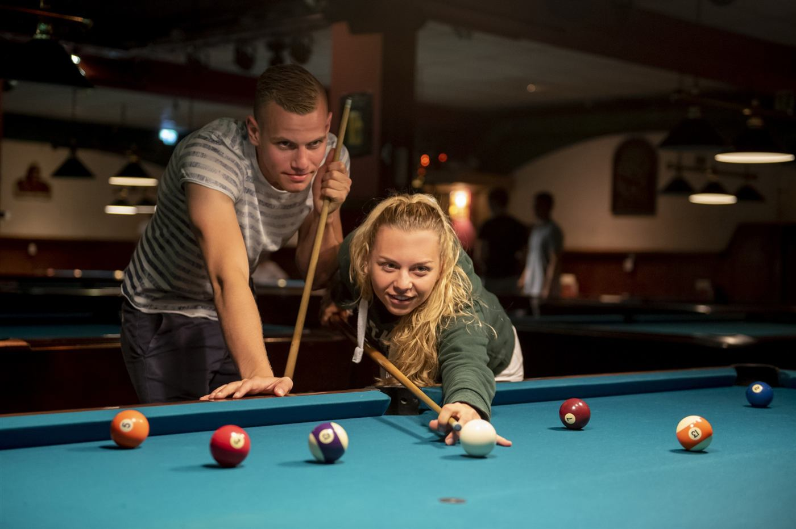
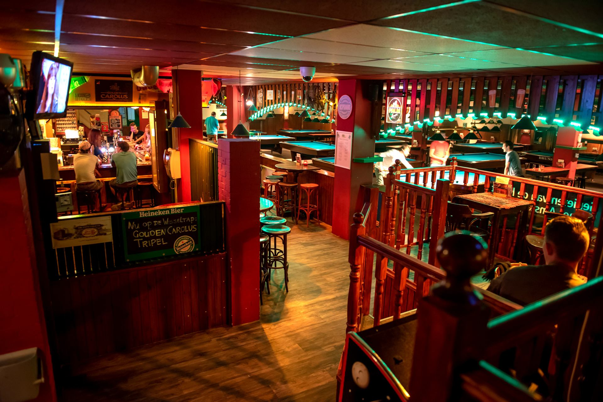
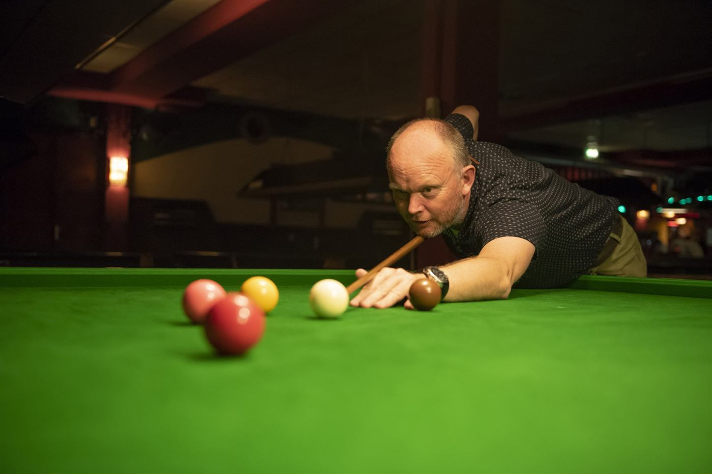
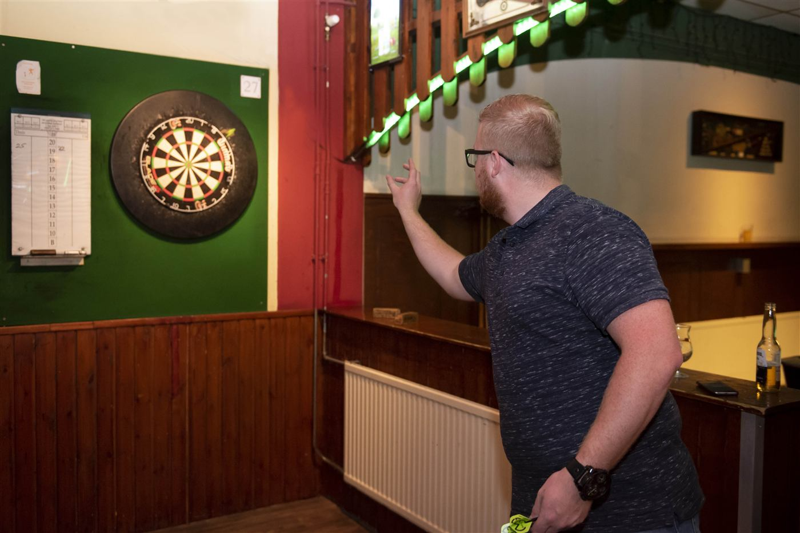
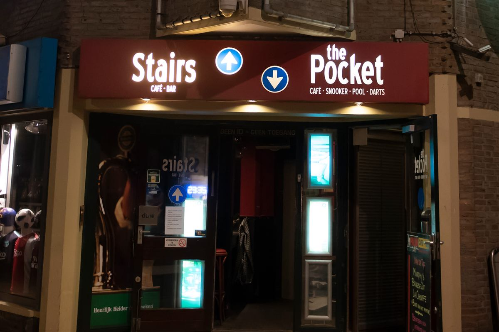

15 pooltafels
Pool
Allemaal Brunswick Gold Crown III. Pool is een van oorsprong Amerikaans spel op een tafel met een pocket in elke hoek en midden op de lange zijden.


Midden in het centrum van Katwijk aan Zee, aan de Badstraat. Loop binnen voor een potje, blijf hangen aan de bar.
Elke dag open vanaf 14:30
The Pocket is een gezellige uitgaansgelegenheid waar je niet alleen kunt snookeren, poolen of darten: er is ook een ruim bargedeelte waar je je vermaakt onder het genot van een hapje en een drankje, voor zeer betaalbare prijzen.

15 pooltafels
Allemaal Brunswick Gold Crown III. Pool is een van oorsprong Amerikaans spel op een tafel met een pocket in elke hoek en midden op de lange zijden.

6 snookertafels
Full-size Riley Aristocrat-tafels, waarop op elk niveau gespeeld kan worden. Grotere tafel, kleinere ballen en een dunnere keu dan bij pool.

3 dartbanen, tot 6
Er zijn altijd drie dartbanen direct te gebruiken. Als het nodig is, zetten we er zes in.
Je betaalt per minuut. Voor niet-leden geldt een minimale speeltijd van een half uur.
| tot 19:00 | na 19:00 | |
|---|---|---|
| Normaal tarief | € 12,50 | € 12,50 |
| 1 lid + niet-lid | € 10,00 | € 10,00 |
| 2 of meer leden | € 7,50 | € 7,50 |
| Trainen (1 lid)* | € 2,50 | € 5,00 |
Leden darten gratis. Vraag aan de bar naar het tarief voor niet-leden.
€ 1,50 per tafel of bord voor niet-leden. Leden reserveren gratis.
* Trainen kan alleen als er genoeg tafels vrij zijn. Kan een trainingstafel voor een hoger tarief verhuurd worden, dan gaat dat tarief voor.
Speel je vaker? Met een lidmaatschap speel je goedkoper, dart je gratis en word je elk jaar dat je lid blijft voordeliger uit.
Geldig overdag. In de avonduren kun je wel meedoen aan competities en toernooien. Stap je later over op een volledig lidmaatschap, dan tellen je jeugdjaren mee.
Lid worden? Meld je aan de bar of mail naar info@thepocket.nl.
€ 7,95 per kind
Limonade tussendoor kan voor € 1 extra per kind, ook in plaats van de frisdrank. Andere drankjes rekenen we tegen de normale prijs af.
Op zondagmiddag poolen ouders met hun kinderen tot en met 15 jaar voor het halve tarief.
Op zondagmiddag van 15:30 tot 18:30 staat er live muziek op ons poppodium. De toegang is gratis, maar vol is vol. Een reserveringsticket is mogelijk: vraag ernaar aan de bar of bel ons.
Al ruim tien jaar de grootste hits van de Nederpop, om mee te zingen en te swingen.
Gemaakt door Kroegquiz.nl: acht rondes van tien vragen plus twee extra rondes waarin je een tegoedbon kunt winnen. Er wordt een hapje verzorgd. Teams van 4, maximaal 5 spelers.
Een zeskoppige rockband met de beste rocknummers uit de Top 2000.
Een rasechte Dire Straits-tributeband van vijf West-Vlaamse muzikanten.
Een energieke Top 2000-band met alleen bekende hits en de krachtige stemmen van de zangeressen.
Na zeven jaar weer terug op het podium van The Pocket, met het repertoire van Blondie.
Herkenbare hits met een southern twist, gespeeld door vier bandleden.
Een zevenkoppige tributeband uit Nijmegen die de muziek van Fleetwood Mac tot leven brengt.
De grote hits, bekende lp-tracks en verborgen pareltjes van Supertramp.
Naast het poppodium organiseren we ook akoestische optredens, silent movie, quiz-avonden, darts en theater. Op Facebook zie je foto's van eerdere avonden.
071 40 721 27
info@thepocket.nl
Facebook
Neem je ID mee: geen ID is geen toegang.

| Maandag | 14:30 – 01:00 |
|---|---|
| Dinsdag | 14:30 – 01:00 |
| Woensdag | 14:30 – 01:00 |
| Donderdag | 14:30 – 01:00 |
| Vrijdag | 14:30 – 03:00* |
| Zaterdag | 14:30 – 03:00* |
| Zondag | 14:30 – 01:00 |
* De deur sluit om 02:00.